PageBunker is a Chrome, Edge, and Firefox extension that saves the article you are reading to your own device. No account, no server. Saved articles open offline and after the original page is gone, full-text search covers the body, and a backup file is kept in your Downloads folder. MIT licensed. No device sync, no mobile app.
PageBunker는 지금 보는 글의 본문을 내 기기에 저장하는 크롬·엣지·파이어폭스 확장이에요. 가입할 계정도, 글을 보관하는 서버도 없어요. 저장한 글은 인터넷이 없어도, 원문이 사라진 뒤에도 열리고, 본문 전체를 검색할 수 있으며, 다운로드 폴더에 백업 파일이 함께 남아요. MIT 오픈소스이고, 기기 간 동기화와 모바일 앱은 없어요.
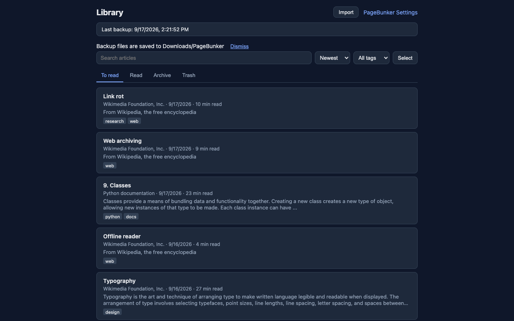
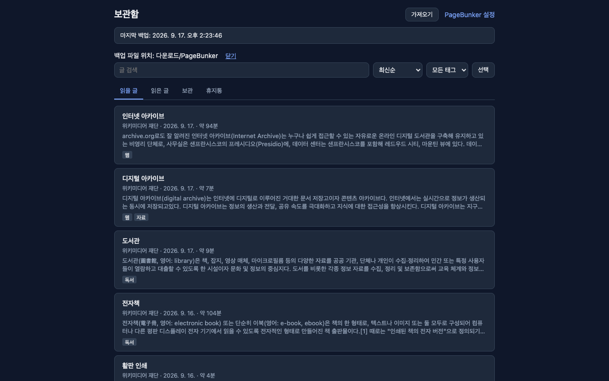
Three things, in order. The third one is why PageBunker writes to your Downloads folder.
세 가지가 순서대로 일어납니다. 세 번째가 다운로드 폴더에 백업을 남기는 이유입니다.
Click the toolbar button and choose "Save this article", press Alt+Shift+L (Option+Shift+L on Mac), or right-click and choose "Save this article". Title, author, date, and body are extracted; ads, menus, and comments are left out.
툴바 버튼을 누른 뒤 뜨는 창의 "이 글 저장", Alt+Shift+L(맥은 Option+Shift+L), 또는 우클릭 메뉴 "이 글 저장"으로 저장합니다. 제목·작성자·날짜·본문을 뽑고 광고·메뉴·댓글은 빼고 저장합니다.
To read, Read, Archive, and Trash tabs organize your articles. Sort, tag, search full text, and open a clean reader that works offline.
읽을 글, 읽은 글, 보관, 휴지통 탭으로 정리합니다. 정렬·태그·본문 검색이 되고, 오프라인에서도 읽을 수 있는 읽기 화면이 열립니다.
When your articles change, PageBunker writes pagebunker-latest.json to Downloads/PageBunker. Once a day a dated file is added, keeping the latest 7. The browser keeps the 3 most recent copies as well.
글이 바뀌면 다운로드/PageBunker 폴더에 pagebunker-latest.json을 씁니다. 하루 한 번 날짜 파일을 만들고 최근 7개까지 남깁니다. 브라우저 안에도 최근 사본 3개를 보관합니다.
The browser library and the backup file in Downloads are separate copies. Browser storage disappears when the extension is removed, the profile is reset, or browser data is cleared. After uninstalling, you can restore from a backup file that remains on disk.
브라우저 보관함과 다운로드 폴더의 백업 파일은 따로 보관됩니다. 브라우저 저장소는 확장을 지우거나 프로필을 초기화하거나 브라우저 데이터를 정리하면 사라집니다. 확장을 지운 뒤에는 남아 있는 백업 파일로 복원할 수 있습니다.
Real screens from the extension, not mockups.
모두 확장의 실제 화면입니다.
To read, Read, Archive, and Trash. Sort by date or length, add tags, and select multiple articles at once. Articles in Trash are deleted automatically after 30 days.
읽을 글, 읽은 글, 보관, 휴지통. 날짜·길이로 정렬하고, 태그를 붙이고, 여러 글을 한꺼번에 선택할 수 있습니다. 휴지통의 글은 30일 후 자동으로 삭제됩니다.
Find an article by a phrase in its saved text, even if you forget the title. Search covers your library, not the unsaved body of a link-only item.
제목을 잊었어도 저장한 본문의 구절로 찾을 수 있습니다. 검색 대상은 보관함의 글이며, 아직 본문을 저장하지 않은 링크의 원문까지 검색하지는 않습니다.
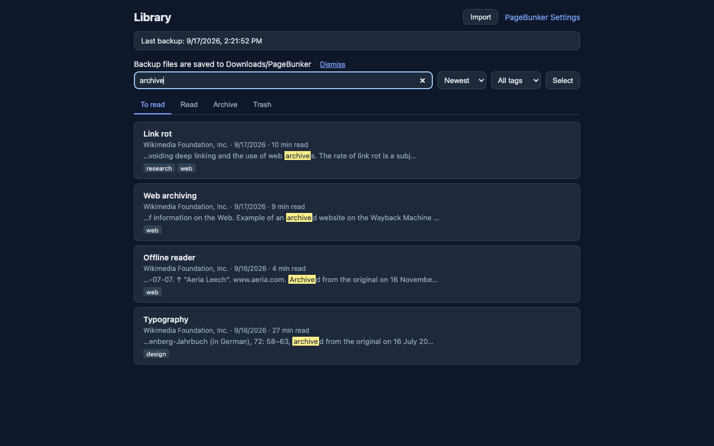
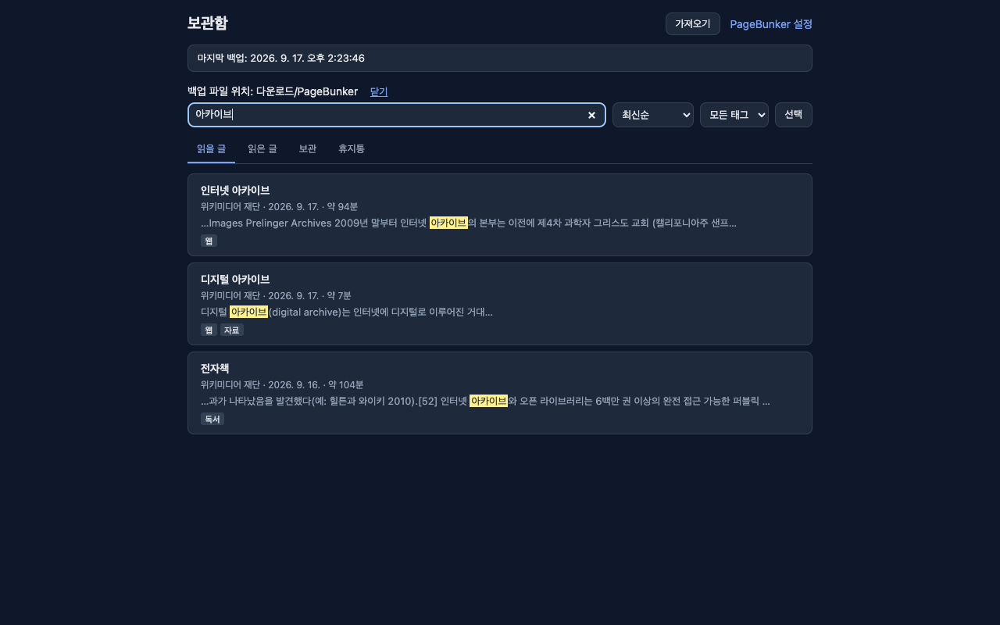
Adjust font size, line spacing, and width. Light and dark themes. Remembers where you stopped reading. Marks an article as read when you reach the end; you can turn this off. Images are not loaded by default — click "Show images" or turn them on in settings.
글자 크기, 줄간격, 폭을 조절합니다. 밝은·어두운 테마. 읽던 위치를 기억하고, 끝까지 읽으면 읽음으로 표시합니다(끌 수 있음). 이미지는 기본으로 불러오지 않습니다. "이미지 보기"를 누르거나 설정에서 켤 수 있습니다.
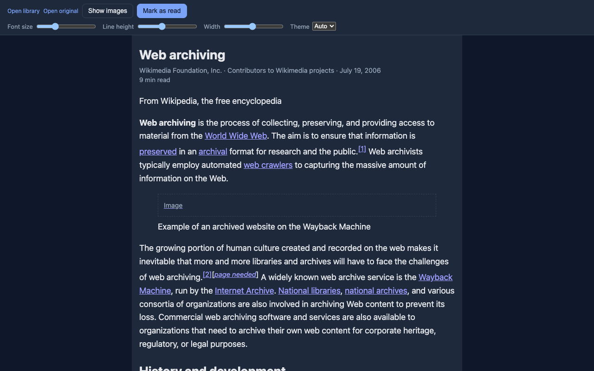
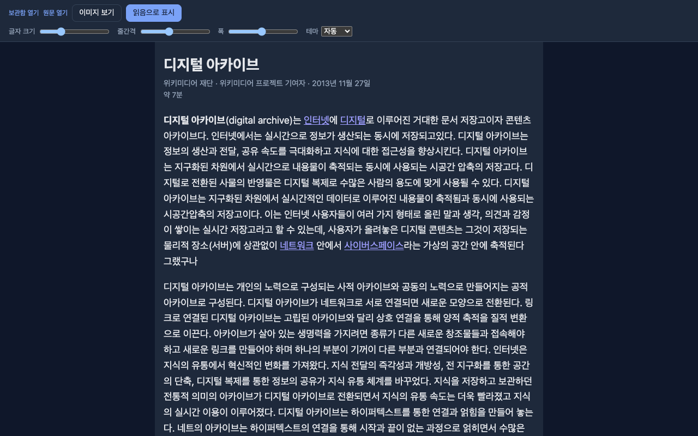
The reader follows your chosen theme. Saved articles still open without an internet connection, even after the original page is deleted.
읽기 화면은 고른 테마를 따릅니다. 저장한 글은 인터넷이 끊겨도, 원문이 삭제돼도 읽을 수 있습니다.
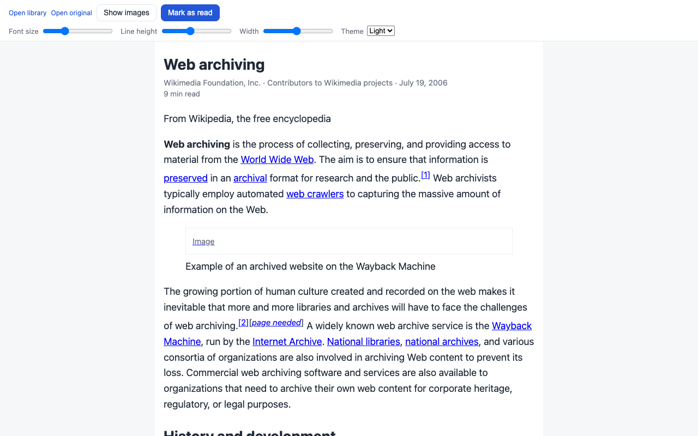
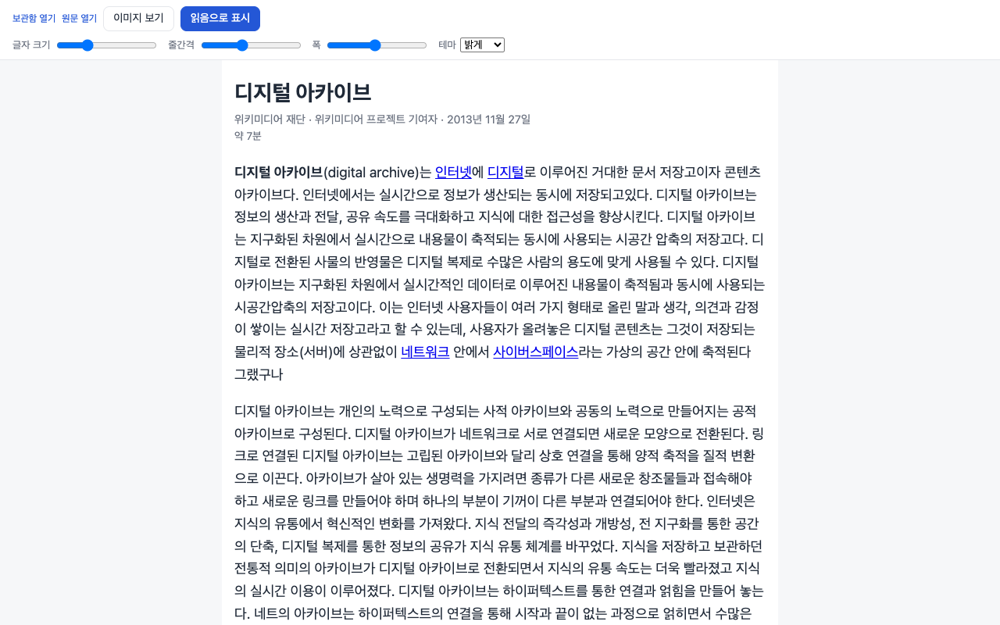
Pocket CSV export (unzip the downloaded file and choose the CSV), Pocket legacy HTML export, Instapaper CSV, and browser bookmarks HTML. Preview before importing. Each import can be undone as a whole. Imported items arrive as links; open the original page and save it to fill in the article body.
Pocket 내보내기 CSV(압축을 풀고 CSV 선택), Pocket 옛 HTML, Instapaper CSV, 브라우저 북마크 HTML. 미리보기로 확인한 뒤 가져오며, 가져오기 작업 단위로 되돌릴 수 있습니다. 가져온 글은 링크만 들어옵니다. 원문을 열어 저장하면 본문이 채워집니다.
Guide: moving Pocket and Instapaper export files into PageBunker
가이드: 보관 중인 Pocket·Instapaper 파일 가져오기
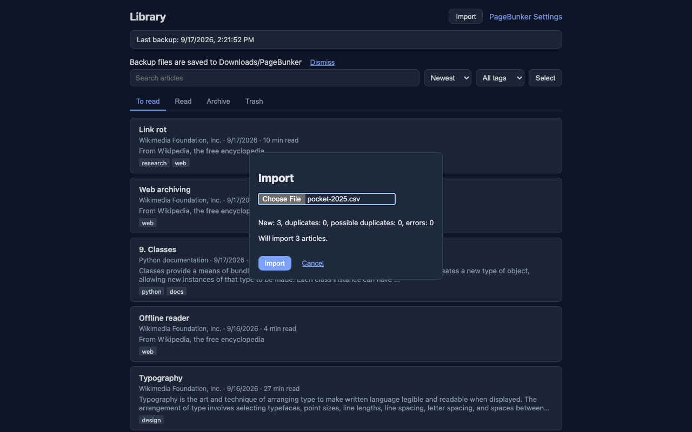
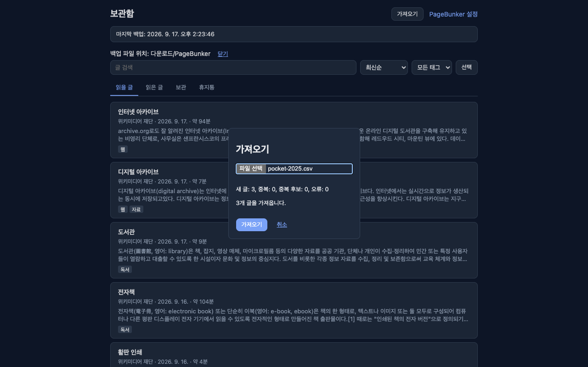
Turn auto mark-as-read on or off, control image loading, and see where backup files are written. Export selected articles as HTML or Markdown.
끝까지 읽으면 읽음 표시, 이미지 불러오기, 백업 파일 위치 등을 설정합니다. 선택한 글을 HTML 또는 마크다운으로 내보냅니다.
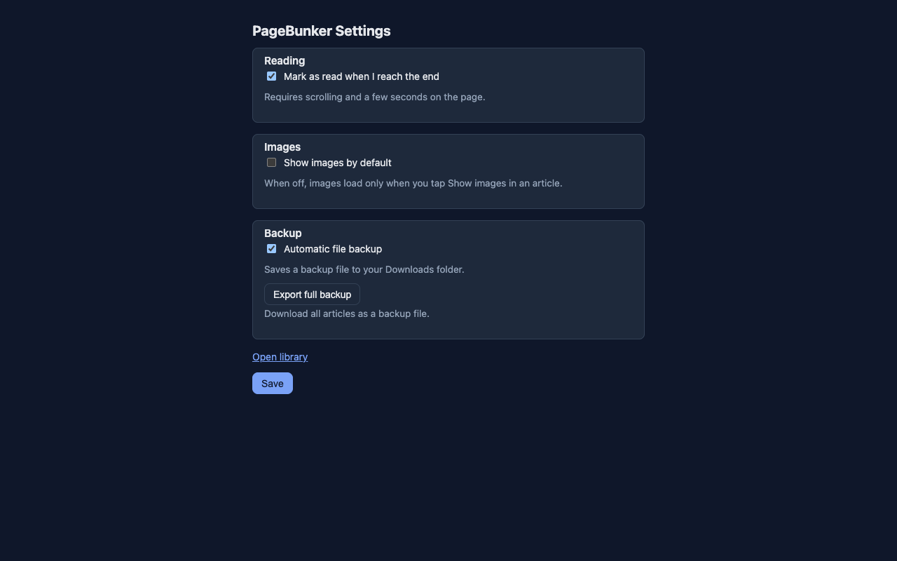
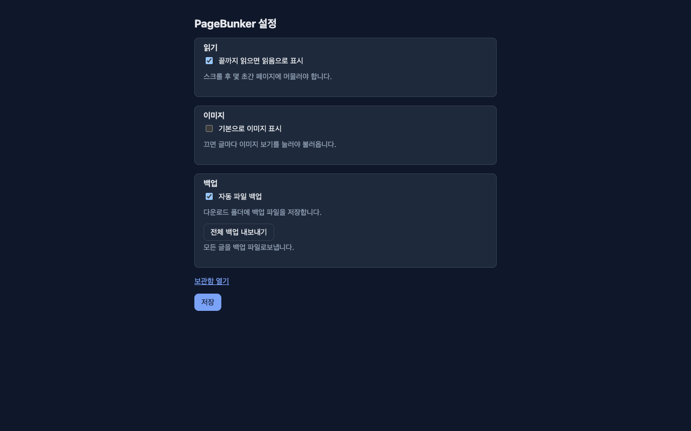
No sign-up, no server, no analytics, no tracking code.
가입, 서버, 분석, 추적 코드가 없습니다.
Reads only the tab where you use PageBunker. No host permissions for all websites.
PageBunker를 사용한 탭의 글만 읽습니다. 모든 사이트 접근 권한은 요청하지 않습니다.
Selected articles as one HTML file or one Markdown file per article.
선택한 글을 HTML 파일 하나로, 또는 글마다 마크다운 파일로 내보냅니다.
Merge or replace from pagebunker-latest.json. A replace can be undone once.
pagebunker-latest.json으로 병합·교체 복원. 교체는 한 번 되돌릴 수 있습니다.
The interface follows your browser language. Chrome, Edge, and Firefox.
화면 언어는 브라우저 언어를 따릅니다. 크롬, 엣지, 파이어폭스.
No paid tier. Source code on GitHub.
유료 등급 없음. 소스 코드는 GitHub에 공개됩니다.
| Place | 위치 | What is there | 무엇이 있나 |
|---|---|---|---|
| Inside the browser | 브라우저 안 | Saved articles, tags, reading positions, settings, and the 3 most recent backup copies. Removed if the extension is uninstalled. | 저장한 글, 태그, 읽던 위치, 설정, 최근 백업 사본 3개. 확장을 지우면 함께 사라집니다. |
| Downloads/PageBunker/ | 다운로드/PageBunker/ | pagebunker-latest.json, updated when articles change, plus a daily dated file (7 kept). Stays on disk no matter what happens to the extension. | pagebunker-latest.json(글 변경 시 갱신)과 하루 한 번 날짜 파일(최근 7개). 확장에 무슨 일이 생겨도 디스크에 남습니다. |
| Anywhere else | 그 외 | Nothing. No account, no server, no analytics, no network requests on its own. | 없음. 계정, 서버, 분석, 확장이 스스로 보내는 네트워크 요청이 전혀 없습니다. |
| Permission | 권한 | Why it is needed | 왜 필요한가 |
|---|---|---|---|
| activeTab | activeTab | Read the article only in the tab where you use PageBunker. | PageBunker를 사용한 탭의 글만 읽습니다. |
| scripting | scripting | Run the article extraction code in that tab. | 그 탭에서 본문 추출 코드를 실행합니다. |
| storage, unlimitedStorage | storage, unlimitedStorage | Store saved articles and settings locally. | 저장한 글과 설정을 로컬에 보관합니다. |
| downloads | downloads | Write backup and export files to your Downloads folder. Nothing is uploaded. | 백업·내보내기 파일을 다운로드 폴더에 씁니다. 어디로도 올리지 않습니다. |
| alarms | alarms | Schedule backups and daily trash cleanup. | 백업을 예약하고 휴지통을 정리합니다. |
| contextMenus | contextMenus | Add the right-click menu item for saving. | 저장용 우클릭 메뉴 항목을 추가합니다. |
| offscreen (Chrome and Edge only) | offscreen (크롬·엣지만) | Build large backup files. | 큰 백업 파일을 만듭니다. |
No host permissions. You can confirm the zero-network claim yourself: open developer tools, watch the Network tab, and use the extension. The list stays empty unless you open an original page or load images.
호스트 권한이 없습니다. 네트워크 요청이 없다는 건 직접 확인할 수 있습니다. 개발자 도구의 네트워크 탭을 열어 두고 확장을 써 보면, 원문 열기나 이미지 보기를 누르지 않는 한 목록이 비어 있습니다.
Pocket export files contain links, not article bodies. PageBunker imports them as links. Open each original page and save it to fill in the body, or save articles as you read them going forward.
Pocket 내보내기 파일에는 링크만 있고 본문은 없습니다. PageBunker는 링크로 가져옵니다. 원문을 열어 저장하면 본문이 채워지거나, 앞으로 읽을 때마다 저장하면 됩니다.
PageBunker uses the downloads permission to write backup and export files to your Downloads folder. Chrome shows "Manage your downloads" because of that permission. Everything stays on your computer; the extension makes no network requests on its own.
PageBunker는 downloads 권한으로 백업·내보내기 파일을 다운로드 폴더에 씁니다. 그 권한 때문에 크롬에 "다운로드 관리" 경고가 표시됩니다. 모든 데이터는 컴퓨터 안에만 있고, 확장은 스스로 네트워크 요청을 하지 않습니다.
The browser removes the extension's own storage, so the library inside the browser is gone. The JSON files in Downloads/PageBunker stay. Reinstall and restore from pagebunker-latest.json to get your library back.
브라우저가 확장 저장소를 지우므로 브라우저 안의 보관함은 사라집니다. 다운로드/PageBunker 폴더의 JSON 파일은 남습니다. 다시 설치하고 pagebunker-latest.json으로 복원하면 보관함이 돌아옵니다.
Text is saved and readable offline. Images are not loaded by default, so no request goes to the original site until you click "Show images" in an article or turn on image loading in settings. When you do load images, they are fetched from the original website and require an internet connection.
글자는 저장되어 오프라인에서 읽을 수 있습니다. 이미지는 기본으로 불러오지 않으므로 "이미지 보기"를 누르거나 설정에서 켜기 전까지 원문 사이트에 요청하지 않습니다. 이미지를 불러올 때는 원문 사이트에서 받아 오며 인터넷이 필요합니다.
No. There is no server, so there is no sync. Copy the JSON file from Downloads/PageBunker to the other computer and restore it there.
아니요. 서버가 없으니 동기화도 없습니다. 다운로드 폴더의 JSON 파일을 다른 컴퓨터로 복사해 거기서 복원하면 됩니다.
Chrome, Edge (same package), and Firefox. Safari is not supported.
크롬, 엣지(같은 패키지), 파이어폭스. 사파리는 지원하지 않습니다.
Yes, and open source. There is no paid tier and no account to create.
네, 오픈소스입니다. 유료 등급도, 만들어야 할 계정도 없습니다.